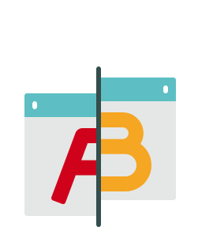
A/B Testing
Also known as split testing or bucket testing, this method allows us to compare two or more versions of a design to determine which one performs better for a given conversion goal. Design variations are served up to users at random, and statistical analysis is used to determine which variation performs better. A/B testing is frequently used in continuous optimisation of websites and apps.
Further resources: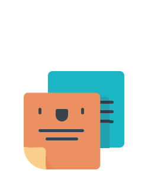
Card Sort
Participants are asked to group a series of cards, which can include words (e.g. needs, wants, features) or images, into meaningful categories and/or rank them in order of preference. This allows us to learn how to best arrange information and the hierarchy of that information. Card sorts are frequently used when deciding how to structure the pages within a website or app (the information architecture).
Further resources: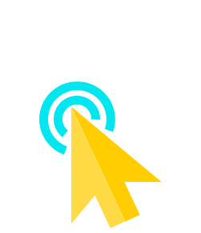
Clickstream Analysis
Also called clickstream analytics, this is the process of collecting, analysing and reporting aggregate data about which pages a user visits in a website or app and in what order. The path the user takes though the website or app is called the clickstream, and it's analysis gives us an understanding of which pages are being visited, which are not, how a user gets to those pages, and what they do once they’re there.
Further resources:- https://www.opentracker.net/article/clickstream-or-clickpath-analysis
- "Practical Web Analytics for User Experience" by Michael Beasley (Chapter 8: Click-Path Analysis)
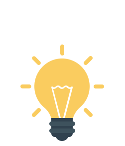
Concept Testing
This method is often used to get early insights from users when desining a new product or service. The researcher shares multiple concepts with participants to understand what features and functions are meeting customer needs. This allows the researcher to explore multiple approaches rather than simply validating one design. Concepts can range from simple wireframes or sketches to high-fidelity visual designs, and are generally completed in a 1:1 interview setting.
Further resources: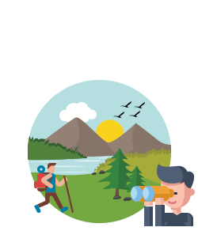
Contextual Enquiry (Field Study)
This is when the researcher goes out to observe users interacting with a product or service in their own environment (e.g. at their workplace or home). The researcher may also interview the participant or get feedback on early concepts, however genuine contextual enquiry must also include unobtrusive observation of behaviour. Contextual enquiry is often used for exploring and identifying user problems to solve (such as in user discovery) or when you need to gain a deep and rich knowlege of a user or segment.
Further resources: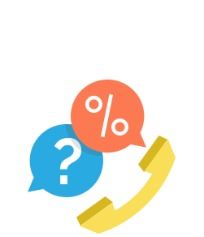
Customer Feedback
This is the analysis of feedback gathered from customer interactions with the product or service, generally provided by a self-selected sample of users (such as through a feedback link, button, form, or email). Interactions can also include inbound customer phone calls to customer service, or onsite chatbots such as Intercom or Zendesk.
Further resources: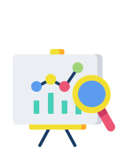
Data Analytics
A field in it's own right, data analytics involves sorting through and interpreting large data sets to identify trends, patterns and relationships so as to uncover ways to improve a product or service. From a UX persepective, this generally involves the use of a specialised software (such as Hotjar) to capture clickstreams, heatmaps, usage recordings, page visits or logins which can then be analysed. This method can be useful when you'd like to understand users' current behaviour with an existing product.
Further resources:Desirability Study
This method is intended to test the desirability of a products visual design, so that we can ensure our design elicits positive emotional responses from users. Participants are shown various visual design directions or interfaces and asked to select words from a standardised list known as the Microsoft Desirability Toolkit. This allows us to measure users' attitudes and sentiments using a standardised vocabulary, so that feedback can be easily synthesised from multiple participants.
Further resources: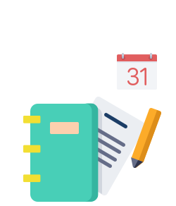
Diary Study
A type of longitudinal study, a diary study involves participants documenting their interactions with a product or service over a period of time. This gives us a deep understanding of their context of use and how their interactions may change over a period of time. Diary studies are timely to organise, run and analyse, but provide very rich and deep data.
Further resources:Email Survey
A user survey in which participants are recruited from an email message. See also: User Survey.
Further resources: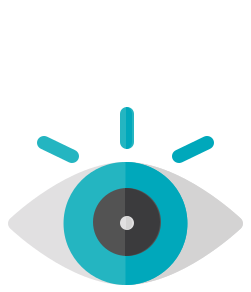
Eye Tracking
In these studies participants are asked to interact with a product or service while wearing specialised eye gear that measures eye motion and focus. Software then generates data about their actions in the form of heatmaps and eye-movement pathways, providing insights into sub-conscious movements and behaviours. Eye tracking studies are especially useful when wanting to understand how users scan information on a page.
Further resources:First-Click Test
A method for understanding where users click first on a website or app in order to complete a certain task. This helps us understand the effectiveness of our design as well as how users engage with our product or service. First-click tests can be useful for evaluating the strength of a call to action, or the hierarchy on a page with multiple call to actions. See also: Clickstream Analysis.
Further resources: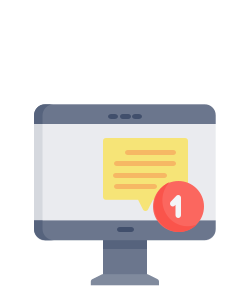
Intercept Message (Poll or Survey)
A method for gathering task-based or timing-specific feedback from users while they're using the product or service. The user receives a targeted, in-app message inviting them to participate in a poll or survey, often implemented using specialised software (e.g. Intercom, Hotjar). Intercept polls or surveys are a good way to capture a users sentiment towards a task directly after completing it (e.g. completing a checkout purchase).
Further resources: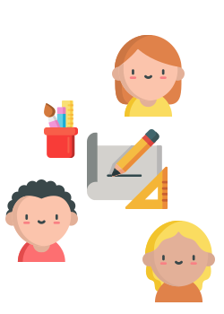
Participatory Design Workshop (Co-Design)
This is when we bring in users to help us design their ideal experience. In a workshop setting, participants are given materials to sketch out or draw their ideal journey or experience, and to express what they value most and why. Special care should be taken by the facilitator to ensure all participants have equal opportunity to share their ideas and express their values.
Further resources: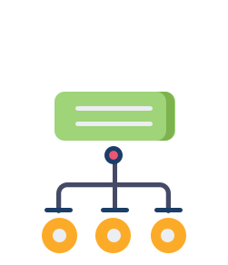
Tree Test
A task-based technique for validating content groupings, labels, or site structure (information architecture) of a website or app. Participants are asked to complete a series of tasks related to finding items in the menu navigation. Tree tests are generally conducted remotely using special software (e.g. Optimal Workshop).
Further resources: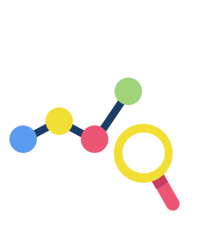
Usability Benchmarking (a.k.a. Baselining)
A method for understanding the current usability of an existing website or app, as well as establishing a benchmark for comparing future design iterations. Participants are asked to perform a series of common tasks and rate them according to perceived ease of use and actual ease of use.
Further resources:Usability Testing (In-person or Remote)
Arguably the best known UX research technique, usability testing allows us to assess the usability of a website or app while gathering feedback about the users' sentiments towards the product. In a usability study, participants are asked to perform a series of common tasks using the product or service (or a prototype) while the researcher records success / failure rates and verbatim comments.
Further resources:Unmoderated Usability Testing (Remote)
The same concept as usability testing, however in unmoderated studies there is no researcher present. Participants complete a series of tasks using the product or service (or prototype) using special software which records actions as well as the users face and speech. This can be a useful way to reduce effort when wanting to test with a larger number of participants. However it should be noted that unmoderated usability testing is not as flexible as moderated usability testing, as participant prompts can't be alterned nor can additional follow-up questions be asked.
Further resources:- https://uxdesign.cc/unmoderated-remote-ux-user-testing-on-autopilot-the-perfect-workflow-a15f603b679b
- https://uxmastery.com/how-to-run-an-unmoderated-remote-usability-test-urut
- https://www.interaction-design.org/literature/article/unmoderated-remote-usability-testing-urut-every-step-you-take-we-won-t-be-watching-you
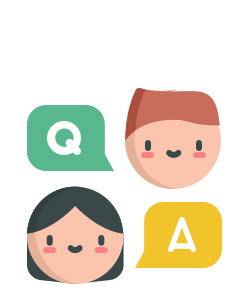
User Interviews
A highly versatile technique, user interviews can be used to explore anything from broad journeys or topics to specific, product or timing related tasks. Participants are asked a series of structured questions designed to reveal attitudes, beliefs, needs, and experiences to give the researcher a deeper understanding of the user. These interviews can take place face-to-face, by phone or video conference and should be completed with one user at a time.
Further resources: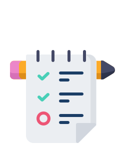
User Survey
Another highly versatile method, user surveys allow us to investigate opinions, preferences, attitudes, and beliefs on a given topic or design from a sample of users. User surveys comprise of a set of structured questions and are generally distributed online using a digital survey tool (e.g. SurveyMonkey).
Further resources: